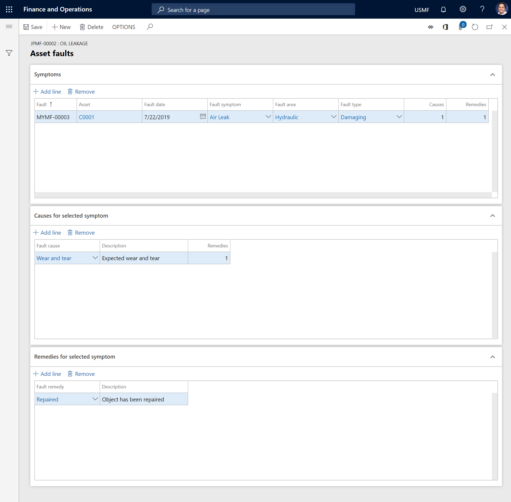

Fügen Sie Fehler zum Arbeitsauftrag hinzu
Important
Dynamics 365 for Finance and Operations hat sich zu speziell entwickelten Anwendungen entwickelt, mit denen Sie bestimmte Geschäftsfunktionen verwalten können. Weitere Informationen zu diesen Änderungen finden Sie im Dynamics 365-Lizenzierungshandbuch.
Sie können einem Arbeitsauftrag Fehler hinzufügen, die im Fehlerdesigner eingerichtet wurden. Mit den Anlagetypen, die für die Anlage verwendet werden, die im Arbeitsauftrag ausgewählt ist, müssen ein oder mehrere Fehlerdatensätze verbunden sein. Weitere Informationen zum Einrichten finden Sie unter Fehlermanagement.
Wählen Sie Anlagenverwaltung > Allgemein > Arbeitsaufträge > Alle Arbeitsaufträge oder Aktive Arbeitsaufträge aus.
Wählen Sie den Arbeitsauftrag aus, für den Sie eine Fehlererfassung durchführen möchten, und wählen Sie dann im Aktivitätsbereich auf der Arbeitsauftrag-Registerkarte in der Anlage-Gruppe Anlagenfehler aus.
Wählen Sie auf dem Inforegister Symptome die Option Position hinzufügen aus. Eine laufende Fehlernummer wird automatisch im Fehler eingegeben.
Wählen Sie das zutreffende Symptom im Feld Fehlersymptom aus.
Wählen Sie in den Feldern Fehlerbereich und Fehlertyp die entsprechenden Werte aus.
Das Feld Fehlerdatum wird automatisch auf das aktuelle Datum festgelegt. Sie können bei Bedarf ein anderes Datum auswählen.
Im Inforegister Ursachen für ausgewähltes Symptom fügen Sie eine Position hinzu, die die Ursache des Problems beschreibt.
Im Inforegister Lösungen für ausgewähltes Symptom fügen Sie eine Position hinzu, die eine mögliche Lösung des Problems beschreibt.
Wählen Sie Speichern.
Die folgende Abbildung zeigt das Beispiel einer Fehlererfassung.

Anzeigen von Anlagenfehlern
In der Liste Anlagenfehler können Sie eine Übersicht aller Fehler erhalten, die für Anlagen erfasst werden.
Auf der Listenseite Anlagenfehler können Sie eine Übersicht aller Fehler erhalten, die für Anlagen erfasst wurden. Wählen Sie Anlagenverwaltung > Abfragen > Anlagenfehler > Anlagenfehler aus, um die Seite zu öffnen.
Anlagenfehlerberichte drucken
Auf der Listenseite Alle Anlagen können Sie einen Anlagenfehlerbericht drucken, der alle Fehlererfassungen sowie eine grafische Übersicht über Fehlerstatistiken anzeigt.
Wählen Sie Anlagenverwaltung > Allgemeines > Anlagen > Alle Anlagen.
Wählen Sie die Anlage aus, für die Sie den Fehlerbericht drucken möchten.
Wählen Sie im Aktivitätsbereich auf der Registerkarte Allgemein in der Gruppe Berichte Anlagenfehler aus.
Geben Sie eine bestimmte Periode ein, oder wählen Sie einen Fehlertyp aus.
Wählen Sie zum Drucken des Berichts OK aus.
Note
Sie können auch einen Fehlerbericht für mehrere Anlagen oder Anlagentypen drucken, indem Sie Anlagenverwaltung > Berichte > Anlagen > Anlagenfehler auswählen.